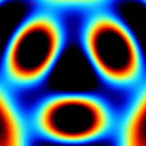
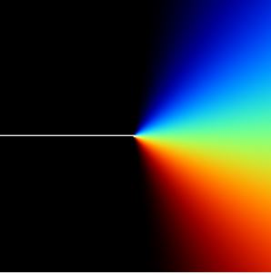
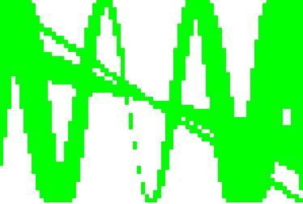
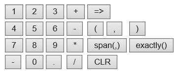
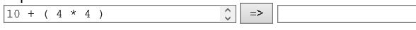
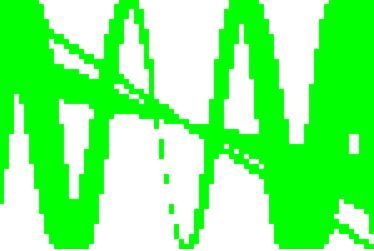
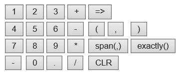
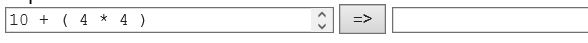

An interactive exploration of interval arithmetric, using my own span.js:
STILL IN PROGRESS
Interval Fields 2D 
Interval Colors 
Interval Graphing 3D Basics Interval Graphing 2D  Interval Calculator  Interval Console for Keyboards  (Windows Pro) ImpView: Implicit Surface Grapher (Windows Pro) Crystal Math v1: Desktop Equation Calculator
Interval Graphing 2D 
Interval Calculator 
Interval Console for Keyboards 
(Windows Pro) ImpView: Implicit Surface Grapher
(Windows Pro) Crystal Math v1: Desktop Equation Calculator